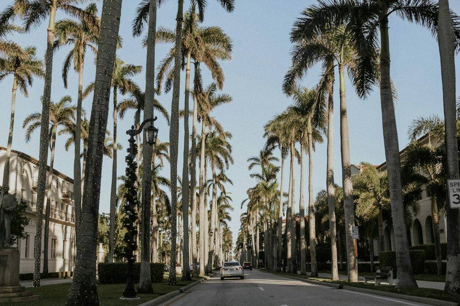
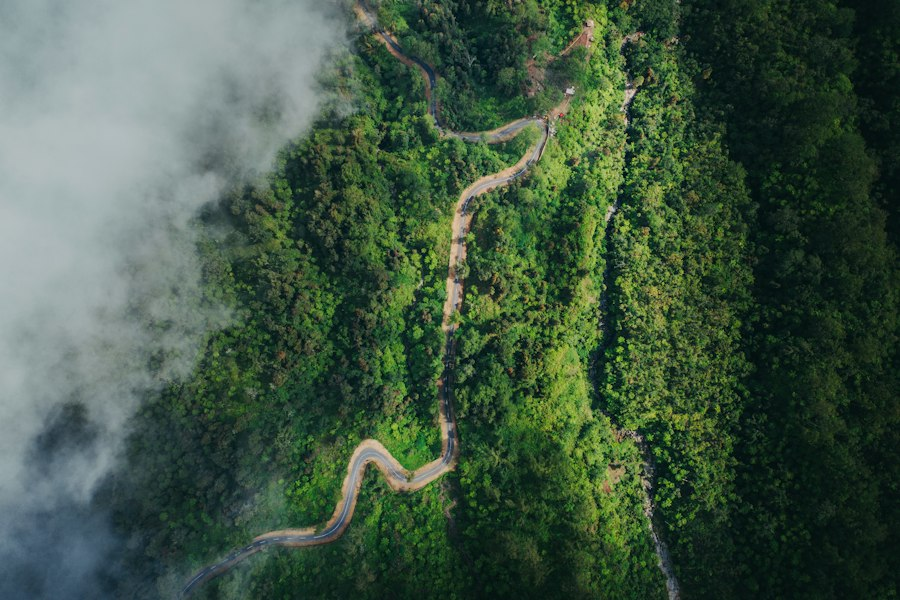
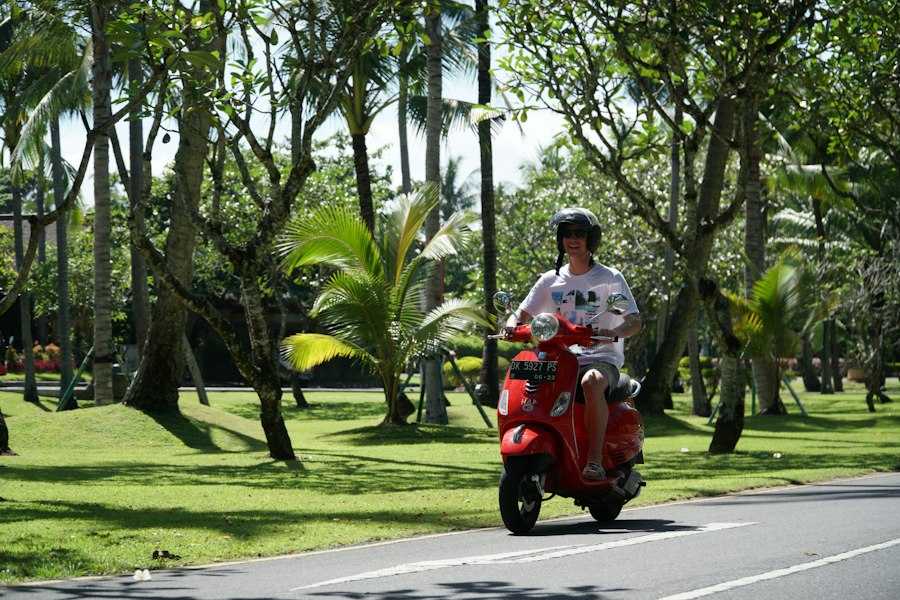
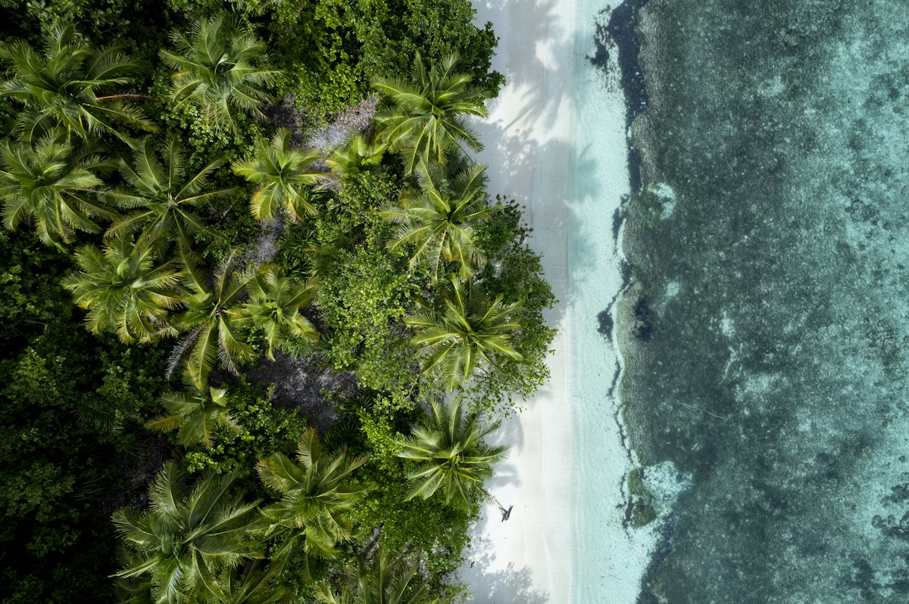

Transportation

Getting Around Taniti
From arrival to island exploration, discover how to travel smoothly across our tropical paradise.
Plan your tripArriving in Taniti
Almost all visitors arrive in Taniti by air, touching down at our local airport, which accommodates small jets and propeller planes. Taniti is expanding the airport so larger jets will be able to land within the next few years.
For sea travelers, a small cruise ship docks in Yellow Leaf Bay for one night each week.
-
Public & Private Buses
City buses run 5 a.m. to 11 p.m.; private buses serve the rest of the island.
-
Taxis & Car Rentals
Taxis in Taniti City and a rental agency near the airport.
-
Bikes & Walking
Helmets are required by law. Taniti City and Merriton Landing are easy to walk.
Featured Transportation Option



Taniti All-Access Uber
Unlimited rides from trusted service providers all around the island. Just call or text and your ride will be on its way.

Build your itinerary
Plan your trip step by step on the site, or start from a ready-made itinerary based on real visitor experiences.
Plan your trip